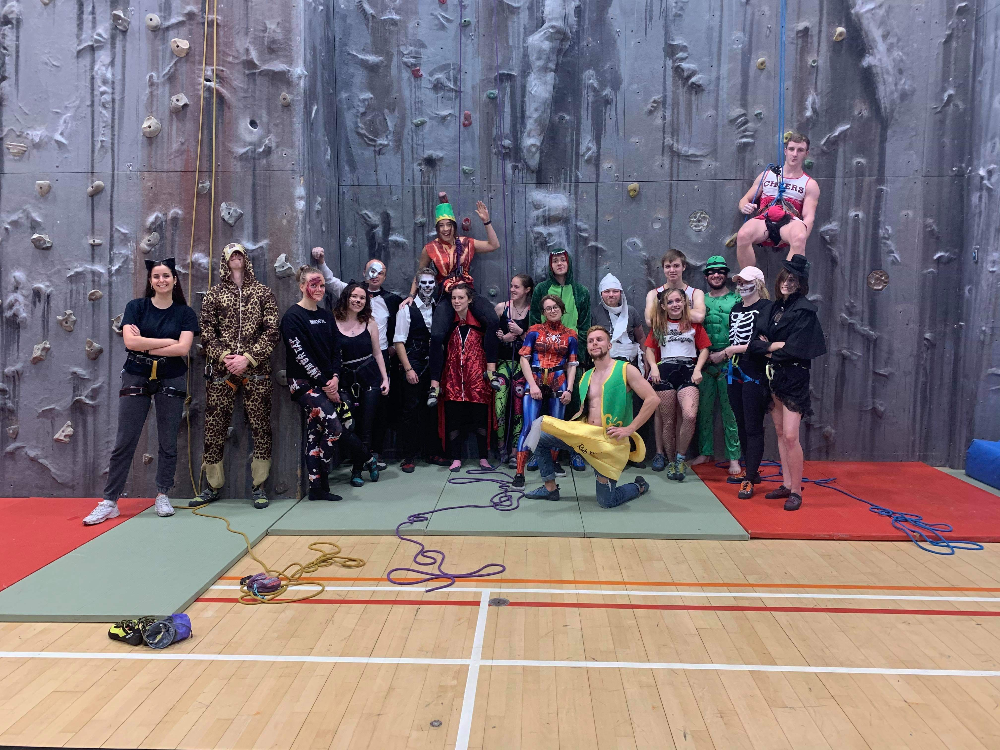
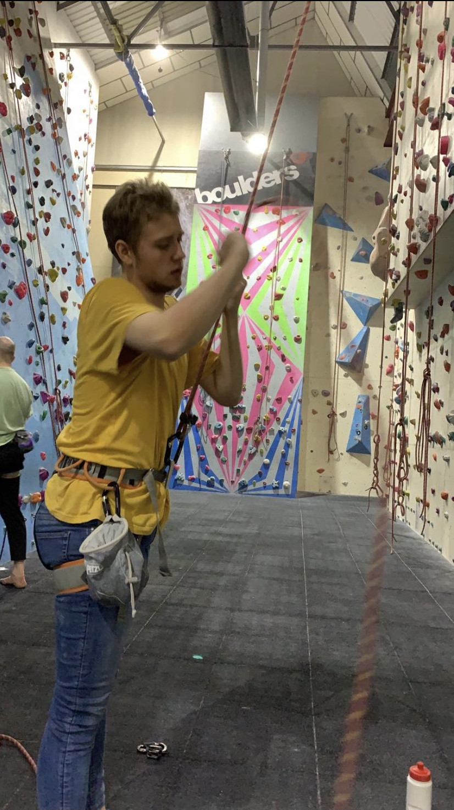
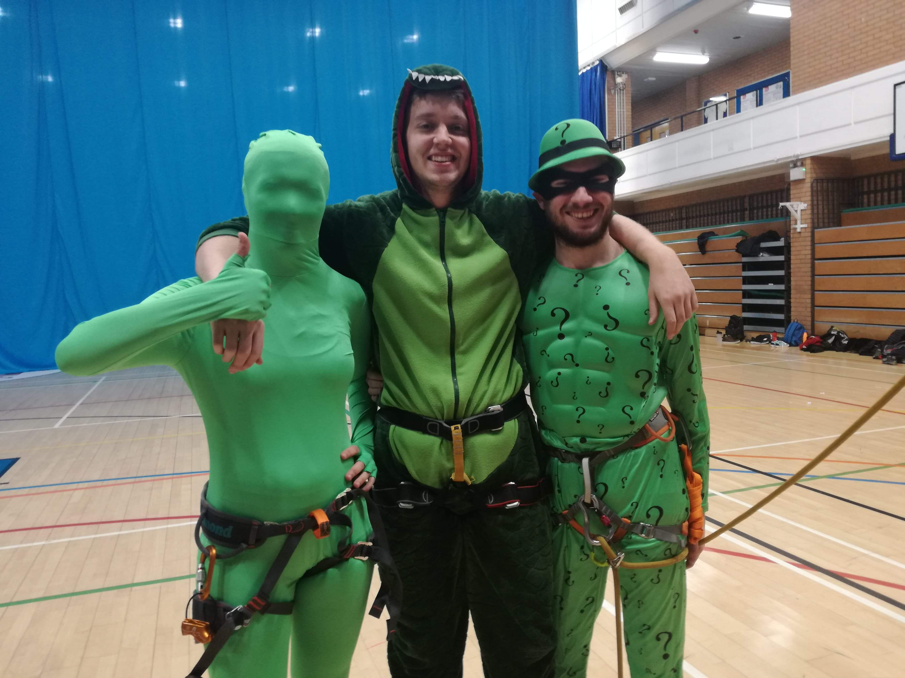

About Me
University
After reaching university I quickly realized that I love the process of exploring new ideas and concepts. To me learning is a constant feat of overcoming new challenges and improving my understanding of the universe around me. Although my interests span into Quantum and Theoretical Physics, Philosophy, Psychology, and Computer Science, my main driver is an interest in the human cognition, and the consciousness that arises from it. I am a firm believer that knowledge is the forefront of innovation and development, I would love to study the defining features of the universe, and therefore how we experience and influence it as humans. I am always open to new ideas and perspectives, and try to participate in everything with the intent to better myself and those around me. This means that no matter the task I will always attempt to complete it to the best of my ability, I am not afraid of asking for help, nor am I afraid of not knowing what to do.
Additional Interests
Having completed an A-Level in Computer Science I retain an interest in programming and technology. I would love to spend some time improving my Java abilities, as well as starting to learn Python, C++, and C#. The ability to write, and compile successful code has always been a pleasure of mine, so finding a cause, or reason to further improve my abilities and create something useful would be an amazing opportunity. Additionally, improving my language abilities is a goal of mine, as I believe becoming bi- or multi- lingual not only provides benefits in communication, but also helps to create a more diverse and healthy brain. Having studied Latin at GCSE level I have found it increasingly useful in day-to-day life, especially when it comes to breaking down and understanding the etymology of medical language found in my textbooks and lectures. Alongside these, learning an instrument has been an interest as it requires constant dedication and practice; as well as improving fine motor skills and coordination. Not only is music an influential medium that can provide comfort, it’s use in Music Therapy for autistic children and the elderly provides an interesting outlet into understanding it’s effects on our mental well-being.
Hobbies
Although currently not playing, I have retained an interest in Ultimate Frisbee since my initial venture in the Reigate Grammar Ultimate Team, I have also found an interest in multiple Martial Arts such as Judo, Boxing, and Brazilian Jiu Jitsu, however have not been able to participate in these activities since joining University. Additionally I have dropped my hobbies in Kayaking and Canoeing since joining University but would love to start back up again as time permits. Instead, I have recently joined the USW Climbing Society consisting of top-rope climbing, lead climbing, and bouldering, as well as joining a DnD (5e) group among friends. DnD provides a surprising insight into creativity and problem solving. Despite only doing Boxing as a short venture it has already introduced me to new perspectives in focusing on the moment at hand, rather than trying to plan for every eventuality. Climbing provides a great aspect into planning, perserverance, and teamwork.
  